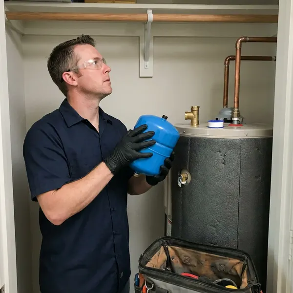

Water Heater Expansion Tank Installation in Corpus Christi, TX
DFJ Plumbing provides expert water heater expansion tank installation throughout Corpus Christi, TX to prevent pressure damage.
- Fast, Local Service
- Licensed Plumbers
- Upfront Pricing
- Code Compliant

Expert Expansion Tank Installation for Your Home in Corpus Christi, TX.
Keep your water heater running efficiently and safely with our professional installation services.
Your Go-To for Water Heater Expansion Tank Installation in Corpus Christi, TX
At DFJ Plumbing, we understand the unique plumbing challenges in Corpus Christi, TX. Our expert technicians ensure your water heater expansion tank is correctly sized and installed according to local plumbing codes, safeguarding your investment and providing peace of mind.
Our expertise includes:
- Precise expansion tank sizing and installation.
- Ensuring compliance with all local plumbing codes.
- Extending water heater lifespan and protecting pipes.

Additional Plumbing Installation Services in Corpus Christi, TX
We install water heaters, pumps, lines, and fixtures across Corpus Christi, TX with careful, permitted work that passes inspection the first time.


Customers
Why Choose DFJ Plumbing for Water Heater Expansion Tank Installation in Corpus Christi, TX?
Installing a water heater expansion tank is a smart preventative measure that saves you from costly repairs down the line. It's an investment in the longevity and safety of your entire plumbing system.
- System Protection, An expansion tank absorbs excess water pressure, preventing strain on your water heater and pipes.
- Code Compliance, Many local Texas plumbing codes require expansion tanks for new water heater installations to ensure safety.
- Extended Lifespan, By reducing pressure fluctuations, the tank helps extend the operational life of your water heater.
Citywide Coverage
Whether you're in the historic districts or newer developments of Corpus Christi, our skilled plumbers are ready to provide prompt and professional expansion tank installation. We are dedicated to protecting your home's plumbing no matter where you are in the city.
Experienced Team
Our team of licensed plumbers has extensive experience with water heater expansion tank installations in Corpus Christi, consistently applying best practices and adhering to all safety standards. We stay updated on the latest plumbing technologies and codes.
Safety-First Approach
Safety is paramount in all our water heater expansion tank installations. We meticulously follow all manufacturer guidelines and local plumbing codes in Corpus Christi, TX to guarantee a secure and compliant system.
Trusted Certified Corpus Christi Plumbing Services Professionals
At DFJ Plumbing, we take pride in providing certified plumbing services throughout Corpus Christi, TX. Backed by leading industry credentials, our experienced plumbers combine technical skill with genuine customer care. Whether it is repair, installation, or maintenance, we follow strict safety and quality standards to deliver long-lasting results you can trust.
Call Us Now PHCC Plumbing Contractor Recognition
PHCC Plumbing Contractor Recognition Better Business Bureau (BBB) Accreditation
Better Business Bureau (BBB) Accreditation Angi Certified Pro
Angi Certified Pro ISO 9001 Quality Management Certification
ISO 9001 Quality Management CertificationReliable Water Heater Expansion Tank Installation Services in Corpus Christi, TX
Standard Water Heater Expansion Tank Installation in Corpus Christi
Our standard installation service covers traditional tank-style water heaters, ensuring the expansion tank is correctly integrated into your cold water supply line. We use high-quality, pre-charged diaphragm-type tanks designed to absorb thermal expansion efficiently. This prevents excessive pressure from building up in your system, which is crucial for prolonging the life of your water heater and preventing damage to fixtures and appliances. We always test the system thoroughly after installation to confirm optimal performance and compliance with local Corpus Christi regulations.

Tankless Water Heater Expansion Tank Integration in Corpus Christi, TX
While tankless water heaters typically have different pressure dynamics, an expansion tank can still be beneficial or even required in certain scenarios or by local codes in Corpus Christi, TX. We assess your specific tankless unit and plumbing configuration to determine if an expansion tank is necessary, especially with higher flow rates or if a recirculation pump is present. Our technicians are skilled in integrating expansion tanks seamlessly with various tankless models, ensuring their efficient operation and protecting your plumbing system.
Residential Expansion Tank Services in Corpus Christi
For homeowners in Corpus Christi, our residential expansion tank services focus on protecting your family's plumbing and hot water supply. We understand that every home is unique, and we tailor our installation to fit your specific water heater size, water pressure, and household demand. This ensures your tank provides optimal protection against thermal expansion, which is a common issue that can lead to costly repairs if not addressed. We use durable tanks from trusted brands to ensure long-lasting performance.
Commercial Expansion Tank Solutions in Corpus Christi, TX
Commercial properties in Corpus Christi, TX often have larger water heaters and higher hot water demands, making expansion tanks even more critical. DFJ Plumbing provides robust commercial expansion tank installations designed to handle the increased pressure and volume of commercial systems. We work with businesses to ensure minimal disruption during installation and adherence to all commercial plumbing codes, protecting your property's valuable assets and ensuring consistent hot water supply for your operations.
Expansion Tank Replacement & Upgrades in Corpus Christi
If your existing expansion tank is old, leaking, or no longer functioning correctly, DFJ Plumbing offers expert replacement services in Corpus Christi. We can also upgrade your current tank to a larger or more efficient model if your plumbing needs have changed. A failing expansion tank can lead to the same pressure problems as having no tank at all. Our team will quickly diagnose the issue and install a new, high-quality tank, restoring protection to your water heating system.
Watts Expansion Tank Installation in Corpus Christi, TX
Watts is a leading manufacturer of high-quality plumbing products, including durable water heater expansion tanks. At DFJ Plumbing, we frequently recommend and install Watts brand expansion tanks due to their proven reliability and performance in Corpus Christi, TX homes. These tanks are designed to meet strict industry standards and effectively manage thermal expansion, providing excellent protection for your water heater and entire plumbing infrastructure. Our technicians are experienced with Watts products and ensure proper installation.
Amtrol Expansion Tank Services in Corpus Christi
Amtrol is another trusted name in water heater expansion tanks, known for their innovative design and long-lasting construction. DFJ Plumbing offers professional installation of Amtrol expansion tanks throughout Corpus Christi, providing homeowners with a dependable solution for thermal expansion control. Amtrol tanks feature durable butyl diaphragms and heavy-duty steel shells, engineered for years of trouble-free service. We select the correct size and model to match your water heater's capacity and provide maximum system protection.

Preventative Expansion Tank Maintenance in Corpus Christi, TX
Beyond installation, regular checks and maintenance of your water heater expansion tank are important to ensure it continues to function effectively. DFJ Plumbing offers preventative maintenance services in Corpus Christi, TX to inspect your expansion tank's air pre-charge, check for leaks, and ensure proper mounting. This proactive approach helps identify potential issues before they lead to system failures, extending the life of both your tank and your water heater.
Water Heater Expansion Tank Installation Near Me in Corpus Christi, TX
When you search for "water heater expansion tank installation near me" in Corpus Christi, TX, DFJ Plumbing is your reliable local choice. Our team is strategically located to provide fast response times and efficient service to homes and businesses throughout the area. We pride ourselves on being the trusted plumbing experts close to you.
Don't delay protecting your valuable plumbing system. For prompt and professional water heater expansion tank installation near me, contact DFJ Plumbing. We're committed to delivering high-quality workmanship and lasting solutions right here in Corpus Christi.
DFJ Plumbing at a Glance
- Licensed and insured plumbers serving Corpus Christi, TX
- Same-day appointments and 24/7 emergency response
- Clear written estimates, no hidden fees
- 4.9-star rated by 812+ Texas customers
Corpus Christi Map
Corpus Christi Information
- Population
- 316,595
- Area codes
- 361/430/364
- Service area
- Corpus Christi and communities within 40 miles
- Nearby
- Victoria, Harlingen, Edinburg, Brownsville
Given Texas's hot climate and the common use of municipal water with varying pressures, a water heater expansion tank is a crucial component for protecting your home's plumbing system in Corpus Christi, TX.
Expert Services
Trust our professionals for reliable DFJ Plumbing solutions in Corpus Christi, TX.
Our Specialized Plumbing Services in Corpus Christi, TX
At DFJ Plumbing, we provide a complete range of plumbing services across Corpus Christi, TX. From leak detection to full system installations, our team ensures fast, precise, and affordable service for both residential and commercial properties. Explore our core services below:


How Our Water Heater Expansion Tank Installation Process Works in Corpus Christi, TX
We ensure a professional and efficient installation, adhering to all safety standards and local codes in Corpus Christi, TX.
Request a Quote
Contact DFJ Plumbing today at (737) 405-5978 to discuss your water heater expansion tank needs. We'll gather necessary information and schedule a convenient time for an assessment.
On-Site Assessment
Our licensed plumber will visit your Corpus Christi home to evaluate your current water heater setup, water pressure, and determine the correct expansion tank size needed.
Professional Installation
We'll expertly install the new expansion tank, ensuring all connections are secure, the tank is properly pre-charged, and the system is functioning correctly.
Frequently Asked Questions About Water Heater Expansion Tank Installation in Corpus Christi
The cost for water heater expansion tank installation in Corpus Christi typically ranges from $250 to $500, including parts and labor. This can vary based on the tank size needed, accessibility, and any additional plumbing modifications required. We provide a transparent, upfront quote after assessing your specific needs.
Yes, expansion tanks do require occasional maintenance to ensure they are functioning correctly. It's recommended to have the air pressure checked annually to match the incoming water pressure. This preventative check helps extend the life of the tank and your water heater.
Permit requirements for expansion tank installation can vary depending on local Corpus Christi codes and whether it's part of a larger water heater replacement project. Our team at DFJ Plumbing is knowledgeable about local regulations and can advise you on any necessary permits for your specific installation.
DFJ Plumbing stands behind our workmanship and the quality of the products we install. We offer a warranty on both the expansion tank itself (per manufacturer's terms) and our installation labor. Specific warranty details will be provided at the time of service.
In Texas, especially in areas like Corpus Christi, an expansion tank is crucial because water expands when heated. Without a tank to absorb this expansion, the increased pressure can damage your water heater, pipes, and fixtures. Many local plumbing codes in Texas also mandate their installation for safety and system longevity.
Signs of a failing expansion tank include water dripping from the tank's air valve, rust or corrosion on the tank's exterior, or your water heater frequently cycling on and off. You might also notice fluctuating water pressure or a banging sound in your pipes, indicating excessive pressure build-up.
DFJ Plumbing installs high-quality expansion tanks from reputable brands like Watts, Amtrol, and Zurn. We select brands known for their durability and performance, ensuring your system receives the best protection. Our plumbers can recommend the best option for your specific water heater and plumbing setup.
While it might seem like a straightforward task, installing a water heater expansion tank involves working with pressurized water lines and ensuring proper sizing and code compliance. It's best to hire a licensed plumber to ensure safe and correct installation, avoiding potential leaks or damage to your system.
What People Are Saying About Our Plumbing Experts?

Patricia H.
We had a slab leak that two other companies could not find. DFJ Plumbing located it in under an hour, explained our options, and the price matched the quote to the dollar.
Slab Leak Repair · Harlingen, TX
Emily R.
I called DFJ Plumbing for plumbing repair, and the technician was fast, polite, and thorough. They explained the problem clearly and fixed it the same day. I will definitely hire them again. Highly recommended!
Plumbing Repair · Brownsville, TX
James P.
Our commercial plumbing system had a leak under the sink, and DFJ Plumbing handled it professionally. The plumbers arrived quickly and restored everything without disruption to our customers.
Commercial Plumbing · Edinburg, TX
Mark T.
When our office needed drain cleaning, DFJ Plumbing provided quick, reliable service. The plumber arrived on time and made sure every drain flowed perfectly before leaving. Very satisfied.
Drain Cleaning · Brownsville, TXRobert G.
The trenchless sewer replacement saved our front yard. They walked us through the camera inspection footage first so we knew exactly what we were paying for.
Sewer Line Replacement · Victoria, TX
Sofia M.
Two new toilets installed in one visit, no mess left behind, and the tech even adjusted a faucet he noticed was dripping. Fair pricing and really friendly.
Toilet Installation · Harlingen, TX